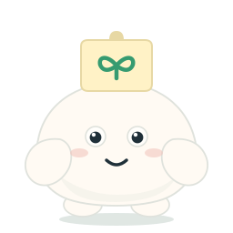

Xiaodai / Art Archive / 01
小待角色美术参考板
把仓库中现存的五张历史 PNG 母版，与当前代码里的正面标准造型放在同一背景和尺寸下比较。这里仅展示原有文件，不绘制新角色，也不把代码 SVG 冒充为独立美术母版。
版本说明：五张 PNG 均见于 V5.3 ZIP → V5.4 仓库基线；仓库未记录各张图最初的绘制版本。右侧当前正面来自 V5.5 SVG 角色系统。历史 PNG 只提供这些正面状态图，缺失的侧面、背面没有补画。
六张原样对照
手机上左右滑动查看；图片不裁切、不滤镜、不重绘
下一版母版必须保留的身份锚点
- 主体与比例
- 一体式白色柔软团子，不额外拼头；整体上部略收、下部更稳。当前正面身体约 x 42–214、y 91–228（256 画布），历史 PNG 的坐姿更圆厚；具体比例应以新母版定稿。
- 眼与表情
- 正面两眼居中偏上，当前眼中心 (105,150) / (151,150)，眼距 46。保留可读的目光与简洁嘴型；历史图的眼更大、更黑。
- 手脚
- 身体两侧各一只手，底部两只脚，无尾巴。当前正面肩锚点 (62,164) / (194,164)，脚锚点 (91,224) / (165,224)；历史图的肢体更厚、更有体积。
- 便签
- 顶部中央一张浅奶油色便签，随状态改变图标，不新增身体附件。当前默认是绿色嫩芽；历史五态分别为嫩芽、灯泡、时钟、感叹号、星星。
- 色彩
- 主身白/暖白，柔和灰边，奶油黄便签，绿色作为平静态识别色，粉色腮红；紧迫与危险态可用橙、红做提示，不改变白色主体。
- 视角边界
- 这五张历史 PNG 不是转面图。新母版设计需要单独审定侧面和背面，不能从正面图镜像、拉伸或凭空标作历史原稿。
当前能看出的主要区别
历史 PNG 有更厚的体积、柔软明暗、较大的黑眼与状态道具，像完整插画；当前 V5.5 正面 SVG 使用更扁平的线条、较小且可控的眼睛、一体圆弧身体和分层手脚，便于动画。二者的身份共通点是白色团子、双手双脚与头顶便签；差异是下一阶段绘制新母版时需要解决的美术选择，本页不替它作决定。